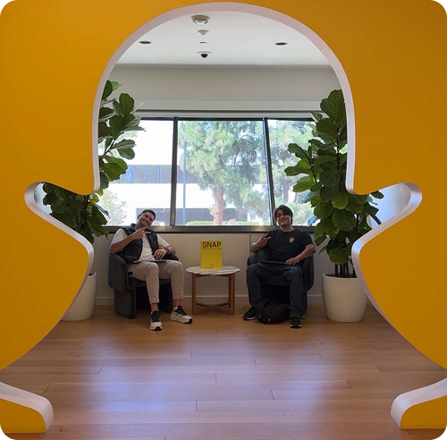
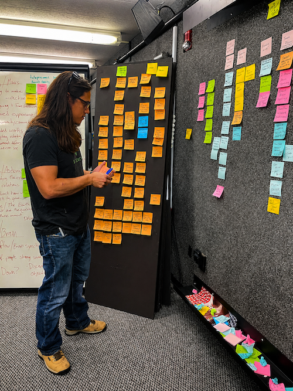
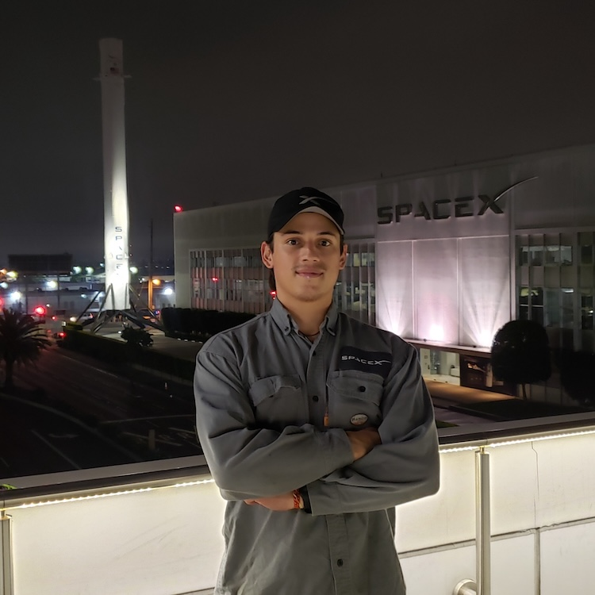
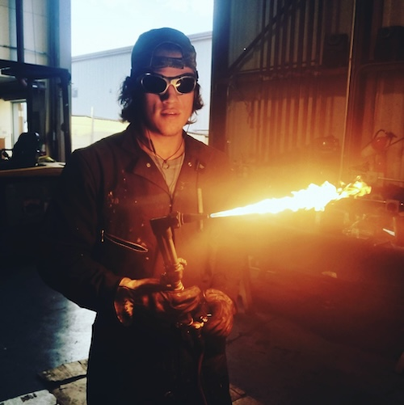
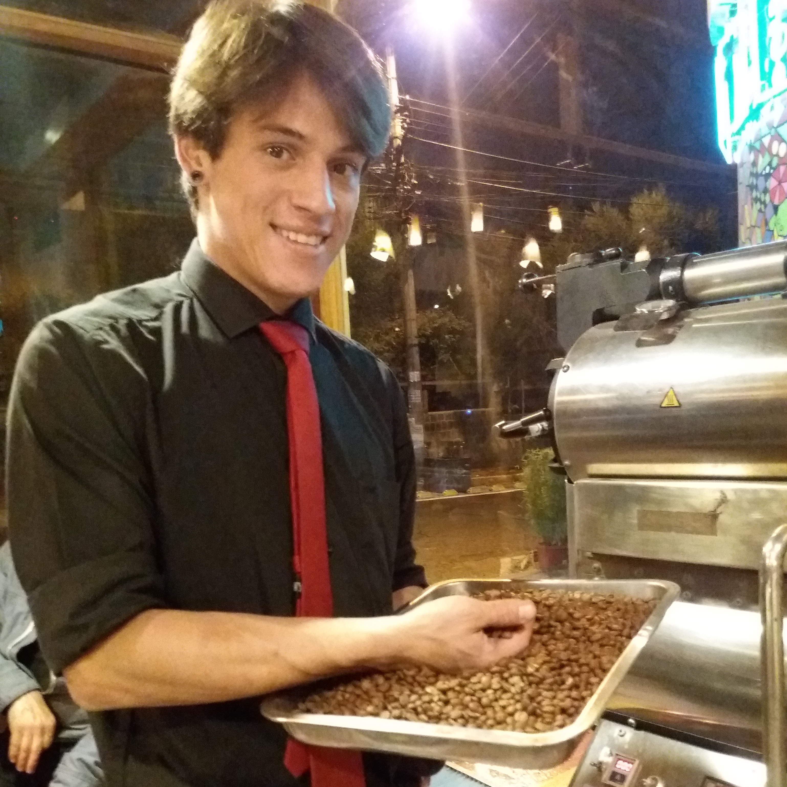

Selected Experience
A nonlinear path through design, code, and making
Snapchat - Content Specialist
Over the last three years at Snap, I helped create interactive AR experiences for some of the world’s biggest stages, from the Olympics and Super Bowl to NBA, WNBA, and NFL activations. Designing for stadium-scale audiences taught me to think beyond the screen, considering not just visuals, but behavior, systems, and how thousands of people might engage with an experience in real time.
Much of my work lived at the intersection of creative experimentation and technical adaptation. I modified game mechanics for new platforms, prototyped custom interactions, and helped translate ideas into experiences deployed across mobile, large-format displays, and connected camera systems. It deepened my belief that technology can turn public spaces into places of play.

NASA JPL - Research Intern
At NASA JPL I contributed to early-stage research and prototyping, building physical models and environmental assets in support of exploratory concepts. It was my first close encounter with engineering as both rigor and imagination, where even speculative ideas demanded precision.
Working alongside researchers exposed me to a culture of curiosity that profoundly shaped how I approach design. It reinforced my love for systems thinking and planted the seed for much of the work I pursue today: creating tools and experiences where science, storytelling, and interaction meet.

SpaceX - Materials & Propulsion Technician
I started as a Material Technician but Eventually got transferred to a Propulsion Technician role, responsible for the assembly of combustion devices for the interplanetary rocket Starship. The open-door characteristics of the company enabled me to work closehanded with engineers, scientists, managers, and many other specialists to help develop a process unique to its type.
This was an amazing opportunity to become familiar with multilevel software that organizes large cross-departmental teams. I was recognized multiple times for my creativity and my hunger to improve the process. From my perspective, Seeing thousands of people coming in together to build such a monumental milestone attract my attention. I wanted to create information systems that help people get together to reach the sky. literally speaking.

SMC - Peer Navigator
At the beginning of the fall 2022 semester. I collaborated with the peer navigators program to onboard new students into the school services. I conducted several interviews, phone calls, and email campaigns to offer assistance and guidance to freshman students during their first weeks at Santa Monica College.
Metal Fabricator
I become a fabricator in Metal Specialties.
This High-End custom, architectural metal shop is located in the heart of the coast of California in a wonderful city named Monterey. They operate in stunning places like Pebble beach, Big Sur, Carmel, and Palo Alto.
Working in a fast-paced environment with such a high standard taught me the mechanics of process and resource management and allowed me to carry out hands-on several projects from conceptualization, fabrication, and final installation. I also learned to emphasize with several audiences such as customers, engineers, architects, and other construction trades.
This awakened my interest in process optimization and project management in manufacturing processes.

Barista
Is there anything better than toasting and brewing Ecuatorian coffee every day? I can only think about the long conversations I held with so many interesting people that came down every afternoon to the cinema8 location of the Rio Intag Coffee Shop in Quito, Ecuador.
Working face the public was a great opportunity to sharpen my social skills and improve my empathy and perception skills that nowadays I use in user-centered design. I also contributed to the decoration of the new 8YMEDIO location with the creation of custom furniture that enhanced the classic English style of the brand.

Street Performer
“Just before the sun rises the sky is at its blackest”
- Thomas Fuller
Every dream has to start somewhere. In my case, the story began with abandoning my career, family, and friends in hopes of finding a brighter future. This work helped me forge my character and a positive attitude toward every situation.

B.S. Industrial Design
Before fleeing my country I was pursuing a Bachelor’s degree in Industrial design from the University of Los Andes. Although I only completed three of the five years required, I enrolled in a variety of courses such as design studios, Research Methods, Theory of forms, Technology for Industrial design, design process, critical theory of design, Prototype Fabrication, Ergonomy, and Graphic Technics for Communication.
Part-Time Hitchhiker
I was blessed to be born in an idyllic period of the story. As a young cub, I spent my free time camping, and climbing but, especially hitchhiking away from home at every little opportunity I had.
I enjoyed exploring different communities and engaging with different cultures far different from mine. I spend time with indigenous communities in the Amazonas of Peru, Ecuador, and Colombia and with the native nations of the Andean sierra, In Ecuador, Peru, and Bolivia. I also visited many metropolises across America.
All these experiences strengthened my empathy and my ability to connect with people on a positive level.